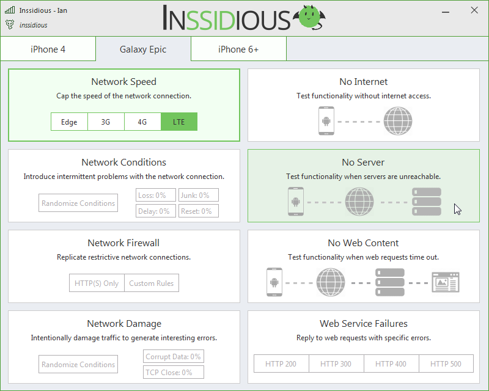

A uniquely frustrating wireless network
Inssidious reproduces the real world, oddly broken, network conditions that users see all the time but are otherwise incredibly difficult to create when developing mobile apps.
From any laptop, Inssidious broadcasts a new wireless network. Connect a phone, and at the click of a button you can slow the network speed, introduce random network problems, block internet access, specific servers, web services, and more.
Requirements
Inssidious runs on any system running Windows 7 or newer with a wireless adapter, including laptops, desktops, and virtual machines (if you pass through a physical wireless adapter).
Support or Contact
Find a bug, or have a request? Submit an issue to get in touch.
Inssidious is currently an alpha quality product, where error handling is often ends in a message box. Known issues are on github and pull requests are welcome.
Thank you
Inssidious is possible thanks to the wonderful open source work of @basil00 with WinDivert and the Qt Project. A further giant thank you to @jagt, whose work with Clumsy inspired Inssidious. Finally, thank you to the fantastic group of QA geniuses at Magenic who supported Inssidious throughout its development.